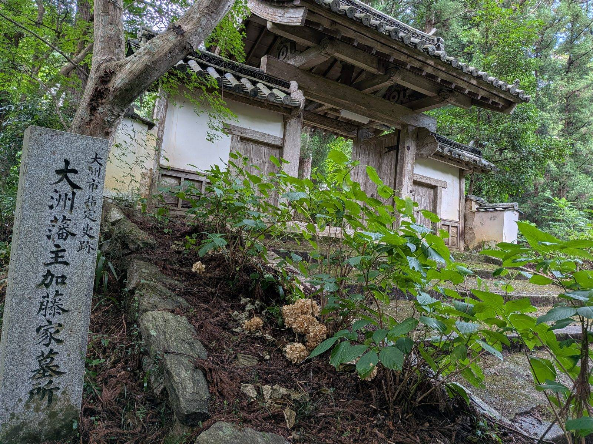

大洲の視点 ・ 出典: 大洲市役所

大洲市の市章は、江戸時代に大洲藩を治めた加藤家の家紋「蛇の目（じゃのめ）」を図案化したものだ。
ここまでは市のプロフィールページにも書いてある。ただ、それ以上のことは載っていない。制定した年すら書かれていない。
そこで大洲市の例規集を探した。あった。全文が公開されていた。
見つかったのは「大洲市章の制定について」（平成17年１月11日 大洲市告示第１号）という文書だ。
注目すべきは番号のほうである。告示「第１号」。平成17年１月11日は、旧大洲市・長浜町・肱川町・河辺村が合併して新しい大洲市が発足した日だ。
つまり新生・大洲市が世に出した一番最初の告示が、市章の制定だったということになる。
これは制定日が分かった以上に、いい発見だったと思う。市の名前を決めて、次にやることが「印（しるし）を決める」ことだった。
Wikipediaには「2005年（平成17年）１月11日制定」と書かれていて、市の公式ページでは確認できないとこの記事にも以前書いていたが、 例規集という一次資料で裏が取れた。日付は正しい。
告示の本文は驚くほど短い。全部でこれだけだ。
規格として「外円の直径は、内円の直径の２倍とする。」 図柄及び色の意味として「大洲藩主加藤氏の家紋『蛇の目』を基に図案化したもので、青色は清らかな肱川の流れ、人々の知的で澄んだ心を表している。」
デザインの決まりごとが、たった一行の比率で表現されている。実物を見ると納得する。
大洲市章は、濃紺一色で塗られたドーナツ型のリングだ。文字もなければ装飾もない。
同心円が２つあるだけ。その２つの円の関係だけを「２倍」と決めておけば、どんな大きさに拡大縮小しても形が崩れない。
蛇の目紋という700年近く使われてきた意匠を、そのまま比率だけで定義した告示ということになる。
その蛇の目紋の由来も調べた。もとは蛇とは関係がない。
蛇の目紋は、弓の弦の予備を巻いておく「弦巻（つるまき）」という道具を紋章化したものだ。
戦国時代末期になって、見た目が蛇の目に似ていることから今の名前で呼ばれるようになった。
つまり武具に由来する紋で、加藤清正など複数の加藤家で使われている。
その加藤家が大洲に来たのは元和３（1617）年。初代加藤貞泰が伯耆国米子（現在の鳥取県西部）から入部した。
以後13代にわたり、明治２（1869）年の版籍奉還まで大洲藩を治めている。
およそ250年だ。弓の道具から生まれた紋が、鳥取から海を渡って大洲に来て、250年の藩政をはさんで、今も市役所の封筒や公用車についている。そう考えると少し面白い。
ややこしいのだが、大洲市には市章とは別に「シンボルマーク」もある。
市町村合併10周年を記念して平成27（2015）年に公募で選ばれたもので、大洲の「お」の字と、市内を流れる川で行われる伝統漁法（うかい）の情景を清流ブルー、みかんと太陽をフレッシュオレンジで表現したデザインだ。
市章は告示で定められた公式の紋章、シンボルマークはＰＲ用のロゴ、という役割分担になっている。
ここが一番調べたかったところだ。順に整理する。
まず著作権。市章は同心円２つだけの図形で、しかも元になっているのは江戸時代から使われてきた家紋だ。
著作権が発生するには創作性が必要とされるが、「外円の直径は内円の直径の２倍」という比率だけで書ける図形に、創作性が認められる余地はかなり小さい。
少なくとも、一般的なイラストや写真のような扱いにはならないと考えられる。
ただし、これは調べた範囲での理解であって、法的な断定はできない。
次に商標。商標法第４条第１項第６号は、国や地方公共団体などを表示する著名な標章と同一または類似の商標は、登録を受けられないと定めている（地方公共団体自身が出願する場合は例外）。
これは他人が市章を商標として独占することを防ぐための規定であって、記事などで紹介することを禁じるものではない。
むしろ「市章は市のものであって、勝手に自分の商標にはできない」という方向の保護だ。
最後に市のルール。ここが実務的には一番効く。大洲市の例規集を探したが、市章の使用について定めた規則は見つけられなかった。告示にあるのは形と意味の定義だけだ。
一方でシンボルマークのほうには使用ルールが用意されている。市や関連団体、市内の学校が教育目的で使う場合、報道機関が報道目的で使う場合は申請不要、それ以外の企業や個人が使う場合は申請が必要（使用自体は無料）、というものだ。
他の自治体、たとえば箕面市などは市章そのものについても使用を許可制にしている例がある。
そのうえで、実は一番簡単な答えがある。大洲市章の画像は、市の例規集のページにそのまま掲載されている。
「大洲市章の制定について」の告示本文の中に図が載っていて、誰でも見られる状態だ。
自分のサイトに画像を置き直さなくても、市の公式ページを見てもらえば、正しい市章が正しい色で確認できる。
出典表示の点でも、この記事の出典欄に挙げた例規集のリンクを開いてもらうのが一番確実だと思う。
というわけで、この記事では画像そのものの転載は見送り、市の公式ページへの案内という形にしておく。
商用でグッズにするような使い方をしたい場合は、企画情報課に確認するのが確実だ。
毎日どこかで目にしているはずの市章だが、由来を意識したことは正直なかった。
調べてみたら、市の一番最初の告示で、本文は比率が一行だけで、元をたどれば弓の道具だった。
加藤家というと大洲城やお殿様道中のイメージが強いが、そのルーツは市章という一番身近な場所にも残っている。
濃紺の丸を次に見かけたら、内側の穴の直径が外側のちょうど半分であることを思い出してほしい。